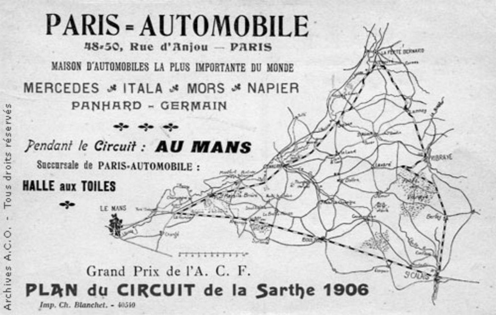
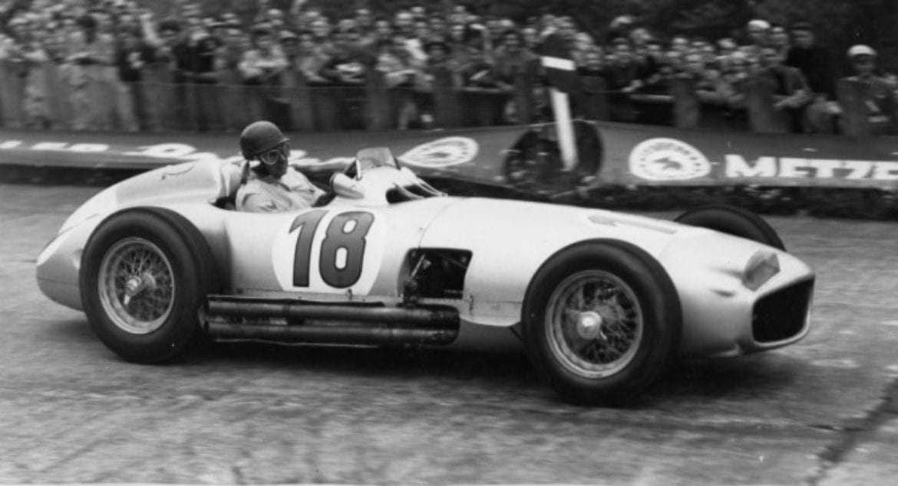
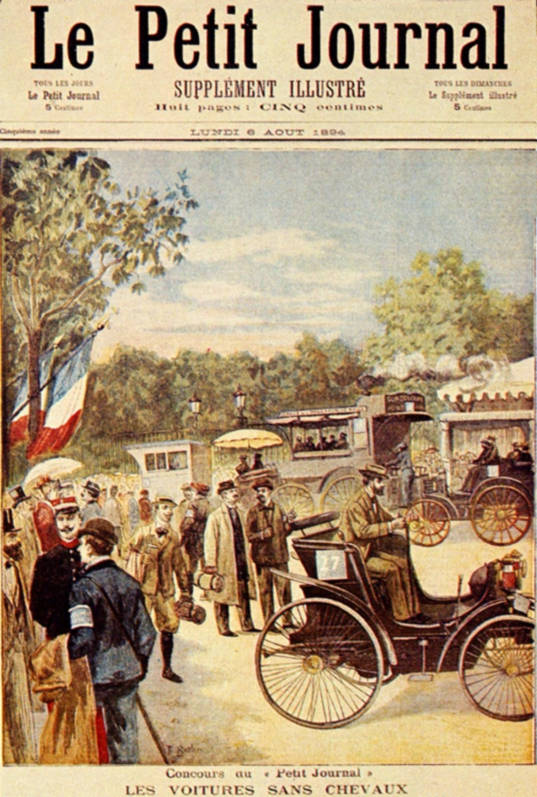
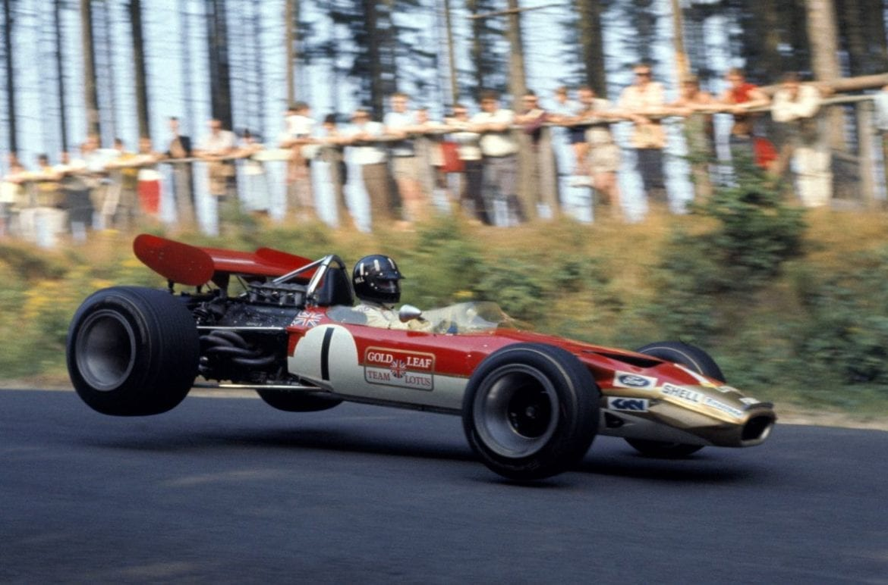
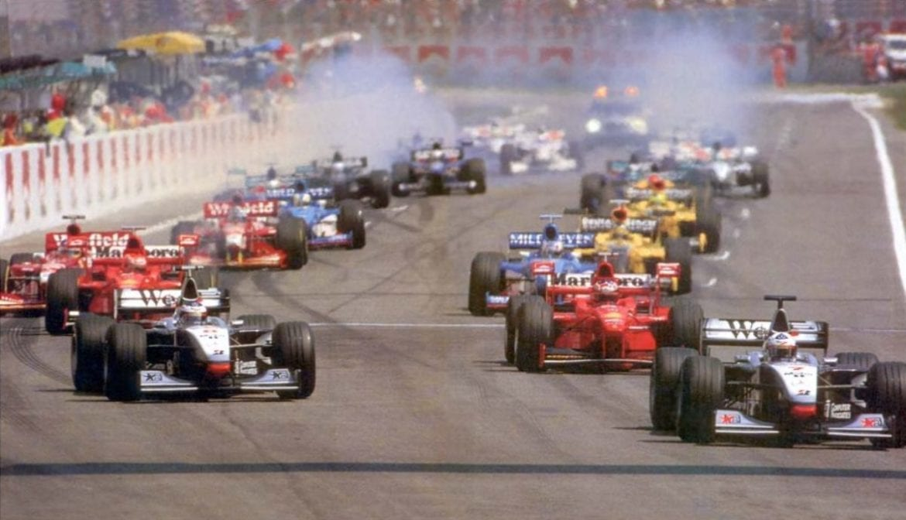
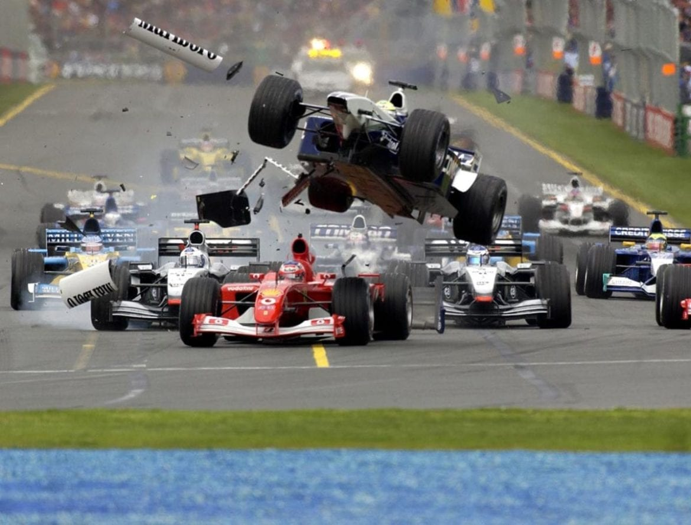

Istorie
Cum a Aparut?
Formula 1, aşa cum este cunoscută acum, își găsește rădăcinile în Franța anului 1894, atunci când ziarul „Le Petit Journal” organizează o cursă pentru “atelaje fără cai” între Paris şi Rouen unde un juriu similar comisiilor tehnice din ziua de azi avea să decidă capacitatea vehiculelor de a fi sigure, ușor de condus şi economice. În acea vreme, capacitatea mașinilor de a fi rapide nu era considerată un aspect important, factorul decisiv fiind constituit de posibilitatea acestora de a aborda traseul şi de a ajunge la destinație, un test pentru tehnologiile de la acea vreme. Totul urma să se schimbe după finișul de la Rouen. Contele de Dion avea să fie descalificat după ce vehiculul său propulsat de un motor pe aburi a fost declarat inadecvat pentru deplasarea pe drumuri publice și victoria a fost atribuită la egalitate cuplului Panhard-Levassor și „fiilor fraților Peugeot” pentru „vehiculele cele mai apropiate de ideal”.
În completarea podiumului, locul 2 i-a fost atribuit contelui de Dion pentru „un tractor interesant ce substituie un cal și oferă atât o viteză bună, cât și cuplu la urcarea pantelor”, iar pe locul 3 s-a clasat Maurice Le Blant cu un vehicul cu nouă locuri. Competitorii au realizat repede că acestea nu sunt premii pentru care vor să concureze. Cel mai important este cine trece primul linia de sosire. Şi atât. Astfel, anul următor are loc prima cursă adevărată din istorie, aceea în care învingătorul era cel mai rapid cuplu om-vehicul, regulă ce avea să stea la baza Formulei 1 așa cum o știm noi astăzi.
Primul Grand Prix din istorie
Odată cu evoluția tehnologică a materialului de concurs, riscurile asumate de echi- paje și spectatori s-au dovedit a fi din ce în ce mai mari. Mașinile au devenit capabile de a atinge viteze de 160 km/h pe trasee ce nu erau altceva decât drumuri de țară ce făceau legătura între orașe, nereglementate în nici un fel din punct de vedere al siguranței. Această bombă cu ceas a ajuns la momentul zero în cadrul cursei Paris-Madrid din 1903, când opt oameni au fost uciși, trei spectatori și cinci piloți, printre care și Marcel Renault. Condițiile de desfășurare erau precare, praful ridicat de concurenți făcând imposibile depășirile în siguranță, iar publicul venit în număr mare nu putea fi controlat în nici un fel. Guvernul francez a luat singura măsură menită să aducă liniște și a oprit cursa, interzicând și orice fel de cursă pe drumuri publice.
Automobile Club de France s-a conformat și a organizat prima cursă de Grand Prix în 1906 pe un circuit de 105 kilometri în jurul orașului Le Mans pe drumuri publice închi- se circulației. Învingător avea să fie ungurul Ferenc Szisz, la comenzile unui Renault ce beneficia de noua tehnologie dezvoltată de Michelin, anvelopa detașabilă. În cele din urmă, ideea de traseu dedicat competițiilor a fost adoptată odată cu inaugurarea circuitului Brooklands din Marea Britanie în 1907, iar doi ani mai târziu avea să se ruleze prima oară pe Indianapolis Motor Speedway în SUA. Ca orice început, prima eră a motorsportului a fost marcată de căutarea formei ideale de desfăşurare a Grand Prix-urilor. Forma era deja acolo.
Perioada premergătoare războaielor
Anii ce au urmat au adus o continuă dezvoltare a regulamentelor competiției, ce a culminat cu o încercare de a reglementa modul de desfășurare în toate țările ce organizau Grand Prix-uri chiar înaintea primului război mondial. Formula nu a avut rezultat, conflagrația ducând la anularea oricărui tip de competiție, dar motorspor- tul avea să reînvie și să se reinventeze. De la doar cinci curse desfășurate în 1927, interesul a crescut exponențial până în 1934 când erau programate 18 Grand Prix-uri. Regulile aveau să se rafineze în această perioadă, competițiile impunând renunțarea la mecanicul din cadrul echipajului, afișarea steagurilor de diferite culori în timpul curselor, impunerea unei culori specifice fiecărei națiuni producătoare de automobile și adoptarea sistemului de calificări pentru stabilirea ordinii de start.
Producătorii francezi au dominat scena motorsportului până la sfârșitul anilor 1920 când a venit rândul italienilor să se impună prin mărci ca Alfa Romeo și Maserati. În același timp, inginerii germani dezvoltau primele mașini aerodinamice, o adevărată revoluție tehnologică la acea vreme. Împinși de regimul nazist să ducă numele Reich-ului pe culmile succesului, Mercedes și Auto Union aveau să piardă doar trei curse în cei cinci ani ce au precedat Al Doilea Război Mondial.
Perioada de după Al Doilea Război Mondial
În 1946 s-au desfășurat doar șase grand prix-uri și contrar faptului că înainte de război se puseseră bazele unui campionat mondial, de abia în 1949 nou-înființata FIA a decis ca acesta să se desfă- șoare începând de anul următor. S-a pus la punct un sistem de punctaj pentru cele șapte desfășurate în Europa și Statele Unite și astfel a avut loc prima cursă de Formula 1, pe 13 mai 1950, la Silverstone, pe un circuit improvizat dintr-un aeroport ce deser- vea RAF- Royal Air Force. Cursele erau dominate de producători cunoscuți, ca Alfa Romeo, Ferrari, Maserati sau Mercedes-Benz, primul campion mondial fiind desemnat Giuseppe Farina(Alfa Romeo). Decada anilor ’50 a adus în lumina reflectoarelor o nouă lume a motorsportului, multe din mașinile de dinaintea războiului fiind lăsate în urmă de noi prototipuri, iar eroi ai trecutului ca Rudolf Caracciola și Tazio Nuvolari își încheiau carierele. Era vremea pentru piloți ca Stirling Moss, Alberto Ascari și Juan Manuel Fangio să strălucească. Dacă Ascari a reușit să câștige două titluri mondiale în 1952 și 1953, Fangio s-a impus într-o manieră ce avea să îi aducă un record de nebătut pentru patruzeci și șapte de ani: cinci titluri mondiale cu patru echipe diferite.
O nouă revoluţie
Nivelul mașinilor crește odată cu nivelul Formulei 1, iar în 1954 Mercedes aduce o mașină cu adevărat revoluționară, monopostul W196. Motorul era unul aspirat de 2,5 litri cu injecție directă preluată de pe avionul de luptă Messerschmitt Bf 109E și era prevăzut cu supape desmodromice, în vreme ce șasiul era unul de aluminiu și caroseria din aliaj de magne- ziu. Bucuria a fost însă de scurtă durată. După două sezoane pe care le-a dominat, Mercedes decide să se retragă după ce una dintre mașinile de uzină a fost implicată în accidentul ce a dus la moartea a 83 de spectatori la LeMans. Producătorul german nu avea să se întoarcă în Formula 1 decât patruzeci de ani mai târziu.
Această retragere neașteptată a adus în prim-plan o nouă generație de piloți britanici, începută cu titlul lui Mike Hawthorne, în 1958. Astfel, prin piloți ca Jim Clark, John Surtees, Graham Hill, Denny Hulme și Jacke Stewart, Regatul Unit și Commonwealth-ul vor câștiga nouă titluri la piloți și tot atâtea la constructori între 1962 și 1973. Influența britanică a avut un rol decisiv în motorsportul acelei perioade și nu numai, atât prin piloți reprezentativi cât și printr-un nou concept de monopost cu șasiu de tip monococă și motor poziționat central. Tot britanicii au adus și ideea de sponso- rizare în Formula 1 în 1968, când Lotus a purtat pe mașini logo-ul Imperial Tobacco. Formula 1 a fost mereu despre inovații tehnice și relevanța aces- tora, dar niciodată nu s-au întâmplat lucrurile atât de repede ca în această perioadă. Colin Chapman deschide lupta aerodinamică odată cu introducerea eleroanelor și elementelor generatoare de apăsare, iar competiția nu rămâne niciodată în urmă. Brabham și Ferrari acționează în consecință afișând aripi din ce în ce mai mari, Matra reînvie ideea de tracțiune integrală și încep să apară soluțiile extreme ca Tyrell P34, monopostul cu șase roți.
Schimbare prin evoluţie
În 1977, Renault propune o nouă metodă de supraalimentare a motorului, tehnologie ce va marca o nouă eră în Formula 1, era turbo. Nivelul ridicat de performanță al propulsoarelor se ridică la cel al motoarelor aspirate fară un consum de combustibil ridicat, iar rata de evoluție a acestora a crescut de la sezon la sezon. În 1986, anul de vârf al motoarelor turbo, se estimează că în setarea de calificări acestea produceau aproape 1400 de cai putere. Această perioadă, contrar dominației Williams și McLaren, este considerată una din cele mai bune din Formula 1. Niki Lauda, proaspăt revenit în activitate, îi sufla titlul colegului său de la McLaren, Alain Prost pentru numai un punct. În același timp, într-un Toleman fără pretenții, se face remarcat brazilianul Ayrton Senna.
În 1987, motoarele atmosferice revin în cursele de Grand Prix cu o capacitate mărită la 3,5 litri, în vreme ce propul- soarele supraalimentate sunt limitate din punct de vedere al consumului de carburant și al presiunii din turbină. În cele din urmă, acestea sunt interzise în 1989. Dar inginerii nu aveau să se oprească aici. Rivalitatea plină de scântei dintre Prost și Senna ține capul de afiș în sezoanele 1989 și 1990, în vreme ce Williams se pregătea de un asalt asupra campionatului. Propulsați de Renault și cu o aerodinamică studiată de Adrian Newey, echipa din Grove avea să dicteze cele mai noi tendințe în tehnologia din motorsportul anilor ‚’90. Mult blamata electronică din cursele zilelor de acum își are rădăcinile în anii ’90, perioadă în care au apărut cutia semi-automată, suspensiile active și controlul tracțiunii. O parte din acestea era derivată din mașinile de stradă, cealaltă parte era dedicată pentru circuite.
Noi direcţii de dezvoltare
În pofida acestei revoluții tehnice, Formula 1 avea să primească o lovitură severă ce va lăsa urme adânci în viitorul competiției. Infamul weekend de la Imola 1994, atunci când Roland Ratzenberger și Ayrton Senna și-au pierdut viața a dus la schimbări majore ale monoposturilor. FIA a decis că s-a ajuns prea departe și a adoptat o serie de măsuri care au redus capacitatea mașinilor de a genera viteze atât de mari și a început să pună accent pe securitatea piloților.
În ciuda numeroaselor schimbări de regulament, dominația marilor echipe nu a încetat, doar 4 dintre acestea (Ferrari, Renault/Benetton, Williams și McLaren) cucerind titlurile între 1984 și 2008. Regulamentul s-a schimbat frecvent în anii ce au urmat în intenția de a da șansa altor echipe de a se impune, aceste măsuri dovedindu-se inutile în fața dominației Schumacher-Ferrari dintre 1999 și 2004. A fost și perioada în care o bună parte din fanii Formulei 1 și-au pierdut interesul, ratingurile Tv scăzând de la an la an, atât din cauza lipsei spectacolului, cât și din cea a jocurilor politice din culise. Echipele amenință că se retrag la finele fiecărui sezon, iar Ecclestone și Mosley, principalii condu- cători, sunt ținte publice pentru cei angrenați și pentru fani. După multe tentative eșuate, FIA propune un regulament nou pentru 2009 ce are ca scop reducerea costurilor prin limitarea perioadelor de teste și cea a numărului de motoare folosite într-un sezon. Măsura pare să dea roade în primul an, atunci când Brawn GP reușește surpriza și devine prima echipă din era modernă ce câștigă un titlu la debut. Bucuria este de scurtă durată, Brawn GP fiind cumpărată de Mercedes, în vreme ce regulamentul suferă noi modificări în 2010. Difuzorul dublu și KERS-ul sunt interzise, sistemul de punctaj se schimbă și devine evident că echipa care se va adapta cel mai repede va deveni campioană.